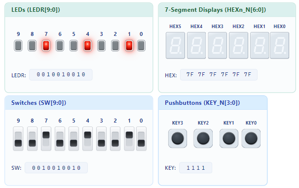
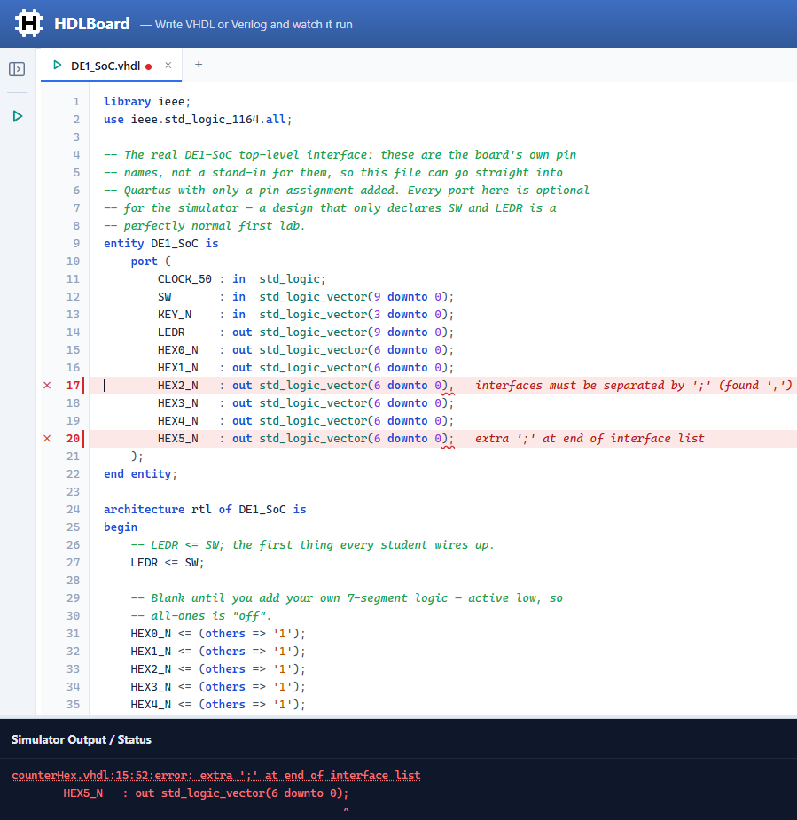
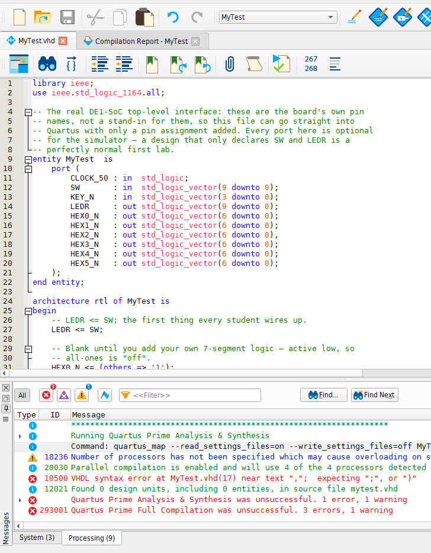
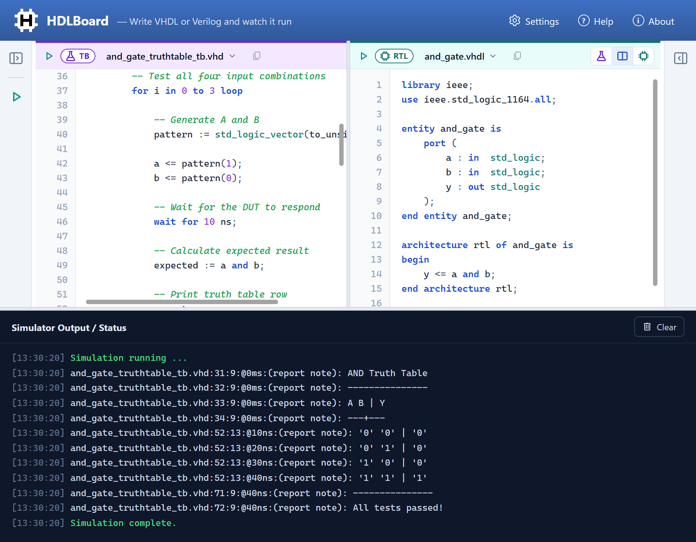

No hardware needed
Everything happens on screen, so you can practise anywhere.
Real VHDL and Verilog
The same code you would put on a real FPGA, run by GHDL (VHDL-2008) and Icarus Verilog. The Windows app ships GHDL 5.0.1 and Icarus 13.0.
Free for everyone
Open source, and free to use at home or in class.

Flip a switch. Your design reacts.
Switches, pushbuttons, LEDs and 7-segment displays respond to your design while it runs. It feels like the real board, without one on your desk.
This is real simulation, not a JavaScript imitation: your design runs in GHDL or Icarus Verilog, and every flip of a switch goes to it while it runs.
Flip the switches yourself in the live demoMake a mistake. See why in a second.
HDLBoard compiles your design in under a second, while Altera Quartus Prime needs more than five. Mistakes are marked right in your code, with a message that says what is wrong.
Measured with the same file on a Windows 11 laptop (Intel Core i7-1185G7, 32 GB): GHDL 5.0.1 checks it in 0.02 s, Quartus Prime Lite 25.1 needs 8.8 s for Analysis & Synthesis alone. A full Quartus compile takes longer.
HDLBoard

- The lines with errors turn red in the editor
- The exact spot is underlined
- The message sits at the end of the line
- Both typos are found in one compile
Quartus Prime Lite

- Nothing is marked in the editor
- Error 10500 appears in a separate message list
- Only the first typo is reported, so the second costs another compile
Test your design. Side by side.
Automatically places your test and design. Press play to see the results.

Nothing to set up. Switch between TB (test), Both and RTL (design) any time.
Get started
Made at USN for students new to FPGA design. Pick what suits you.
-
Try it now
Runs in your browser. Nothing to install.
Try online -
Windows PC
Install the app on your own PC.
Download -
VirtualBox
Run a ready-made virtual machine.
Download -
Classroom
Host one copy for the whole class.
Hosting guide
How it works
- 1
Write
Edit VHDL or Verilog source files in the browser.
- 2
Simulate
GHDL (VHDL) or Icarus (Verilog) compiles and runs your design.
- 3
Watch it respond
Results are drawn live onto the virtual board.
- 4
Interact
Flip switches and press buttons, and see the design react.
- 5
Take it to the board
Same pin names as the DE1-SoC: add a pin assignment in Quartus and program it.
Also in the box
- Real-time pacing: a 1 Hz blink blinks once a second, as on the board
- Testbenches without ports, with
reportandassertoutput live in the console - Hints for common mistakes, like did you mean
range? for a misspelled keyword - Download one file or the whole project as a .zip
What it is not
- No synthesis, timing analysis or bitstream: use Quartus for the real board
- One board only: the DE1-SoC’s switches, keys, LEDs and 7-segment displays
- The browser version starts fresh on reload, so download your files (the Windows app keeps them)
Open source on GitHub
Read the code, report an issue or help make HDLBoard better. Guides and documentation live in the repository.